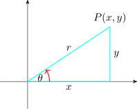
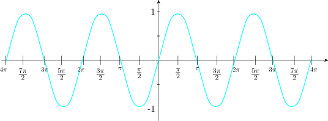
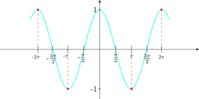
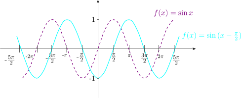
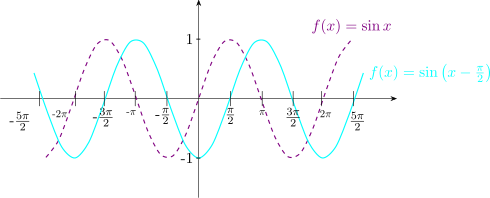

12.4 Graphs
Consider the function \(\hspace {0.2cm} f(x) = \sin x , \hspace {0.2cm} 0 \leq x \leq 2\pi \).
| \(x\) | 0 | \(\dfrac {\pi }{6}\) | \(\dfrac {\pi }{3}\) | \(\dfrac {\pi }{2}\) | \(\dfrac {2\pi }{3}\) | \(\dfrac {5\pi }{6}\) | \(\pi \) | \(\dfrac {7\pi }{6}\) | \(\dfrac {4\pi }{3}\) | \(\dfrac {3\pi }{2}\) | \(\dfrac {5\pi }{3}\) | \(\dfrac {11\pi }{6}\) | \(2\pi \) |
| \(\sin x\) | 0 | \(\dfrac {1}{2}\) | 0.865 | 1 | 0.866 | \(\dfrac {1}{2}\) | 0 | \(-\dfrac {1}{2}\) | \(- 0.866\) | \(-1\) | \(- 0.88\) | \(-\dfrac {1}{2}\) | 0 |
Plotting the curve.

The sine function will repeat itself after \(2\pi \) radians. We can therefor expect the graph to repeat itself as \(x\)
decreases to \(\hspace {0.2cm} - \infty \hspace {0.2cm}\) and also as \(x\) increases \(\hspace {0.2cm}+\infty .\hspace {0.2cm}\)
Using this factor, we now sketch the graph of \(\hspace {0.2cm}f(x) = \sin x \hspace {0.2cm}, \hspace {0.3cm} -4\pi \leq x \leq 4\pi \).

Similarly, the graph of the function \(\hspace {0.2cm} f(x) = \cos x\hspace {0.2cm}\) behaves in the same way as the graph \(\hspace {0.2cm} f(x) = \sin x\).
We sketch the the graph \(\hspace {0.2cm} f(x) = \cos x \hspace {0.2cm}, \hspace {0.2cm} -2\pi \leq x \leq 2\pi \).

\[-1\leq \sin x \leq 1\hspace {0.5cm},\hspace {0.5cm} - 1\leq \cos x \leq 1\]
\(f(x) = 1 + \sin x \hspace {0.5cm} , \hspace {0.5cm} - 2\pi \leq x \leq 2\pi \)
| \(x\) | \(\dfrac {\pi }{2}\) | \(\pi \) | \(\dfrac {3\pi }{2}\) | \(2\pi \) |
| \(f(x) = 1 + \sin x\) | 2 | 1 | 0 | 1 |

Sketch the graph of \(\hspace {0.3cm} f(x ) = \sin \Big (x - \dfrac {\pi }{2}\Big )\hspace {0.2cm}, \hspace {0.2cm} -2\pi \leq x \leq 2\pi \).
Solution.
The graph of \(\hspace {0.2cm} f(x) = \sin \Big (x - \dfrac {\pi }{2}\Big )\hspace {0.2cm}\) is the graph of \(\hspace {0.2cm} f(x) = \sin x \hspace {0.2cm}\) but moved \(\dfrac {\pi }{2}\) units to the right.

The graph of \(\hspace {0.2cm} f(x) = \tan x\hspace {0.2cm}\) for values of \(x\) such that \(\hspace {0.2cm}-\dfrac {3\pi }{2}< x < \dfrac {3\pi }{2}\)

Questions on this section
Stuck on something here? Ask below and it stays attached to this topic.